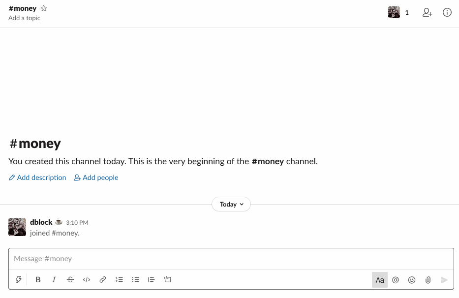

Invite @market to a channel. Mention a stock ticker and its price will appear in Slack.

The bot will try to respond to anything UPPERCASE longer than 2 characters or anything $UPPERCASE, prefixed with a dollar sign.
You can set dollars on to always require a dollar sign if you think the bot is too spammy.

Want another feature? Fork me on Github.